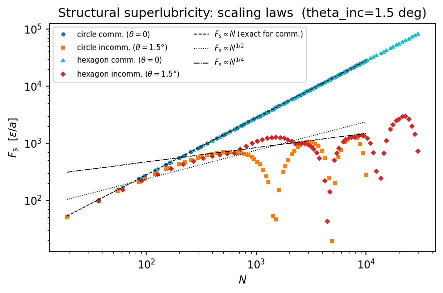

Scaling laws of translational static friction
How does the static friction Fs of a crystalline interface scale with contact size N?
Physics
Commensurate contact (theta=0): Every particle sits at an equivalent substrate site, so all N particles contribute the same maximum force when the cluster is slid by one lattice period. The forces ADD coherently:
Fs = N * F1s (linear scaling)
where F1s is the maximum substrate force on a single particle.
Incommensurate contact (small rotation theta ≠ 0): Particles sit at different substrate phases. As the cluster slides, these forces partially CANCEL because they point in different directions. The cancellation is not perfect (it would be if the lattice were a continuous density), so:
Fs ~ sqrt(N) (sublinear – structural superlubricity)
The cross-over between these regimes is controlled by the moiré period: the pattern of repeating nearly-commensurate patches. When the cluster contains only a fraction of a moiré tile, N^(1/4) behaviour is sometimes seen as an intermediate regime.
Method
For each cluster size Nl (controlling N via cluster_from_params), we compute the translational energy map E(x_cm, y_cm) over one substrate period and extract Fs = max |dE/dx_cm| = max Fx over the grid. We do this for theta=0 (commensurate) and theta=theta_inc (incommensurate). Both circle and hexagon shapes are tested to verify shape independence.
[1]:
import numpy as np
from numpy import sqrt, pi
import matplotlib.pyplot as plt
from time import time
from flake.substrate import substrate_from_params, get_ks
from flake.cluster import cluster_from_params, rotate
from flake.maps import translational_map
System setup
[2]:
# Sinusoidal triangular substrate, spacing=1.
ks = get_ks(1, 3, 4./3., 0.)
params = {
'sub_basis': [[0, 0]],
'epsilon': 1.0,
'well_shape': 'sin',
'ks': ks,
'a1': np.array([1.0, 0.0]),
'a2': np.array([0.5, -sqrt(3.)/2.]),
'cl_basis': [[0, 0]],
'cluster_shape': 'circle',
'N1': 25, 'N2': 25, # placeholder, overwritten in loop
}
pen_func, en_func, en_inputs = substrate_from_params(params)
# Sanity check: single-particle energy at origin should be -epsilon.
pos_test = np.zeros((1, 2))
e_test = pen_func(pos_test, np.zeros(2), *en_inputs)[0][0]
print('Single-particle E at origin: %.4g (expected %.4g)' % (e_test, -params['epsilon']))
assert abs(e_test + params['epsilon']) < 1e-6, \
'Substrate sanity check failed -- check ks values'
Single-particle E at origin: -1 (expected -1)
Grid for translational map
For the sinusoidal substrate we use a Cartesian grid (no unit cell). One substrate period is sufficient to find max |Fx|.
[3]:
# Substrate period along x.
period = 2. * pi / np.linalg.norm(ks[0])
n_grid = 50 # 50x50 is coarse but sufficient to locate max |Fx|
xx = np.linspace(0., period, n_grid)
yy = np.linspace(0., period, n_grid)
pos_cm_grid = np.array([[x, y] for x in xx for y in yy])
# Incommensurate orientation: small rotation breaks commensurability.
# 1.5 deg is small enough to stay near commensurate contact but large
# enough to show the superlubricity regime clearly at these cluster sizes.
theta_inc = 1.5 # degrees
Sweep over cluster sizes: circle and hexagon
For each shape and each size Nl (half-side of bounding box), compute:
Fs_comm: max |Fx| at theta=0 (commensurate)
Fs_inc: max |Fx| at theta=theta_inc (incommensurate)
[4]:
shapes = ['circle', 'hexagon']
colors = {'circle': ('tab:blue', 'tab:orange'),
'hexagon': ('tab:cyan', 'tab:red')}
markers = {'circle': ('o', 's'),
'hexagon': ('^', 'D')}
# Log-spaced sizes: Nl ~ 4 to ~125.
Nls = np.unique(np.round(10**np.linspace(0.6, 2, 100)).astype(int))
print('Nl range: %i to %i (%i sizes)' % (Nls[0], Nls[-1], len(Nls)))
results = {} # results[shape] = {'Ns_comm', 'Fs_comm', 'Ns_inc', 'Fs_inc'}
for shape in shapes:
params['cluster_shape'] = shape
Ns_comm = np.zeros(len(Nls), dtype=int)
Fs_comm = np.zeros(len(Nls))
Ns_inc = np.zeros(len(Nls), dtype=int)
Fs_inc = np.zeros(len(Nls))
t0 = time()
for i, Nl in enumerate(Nls):
params['N1'] = params['N2'] = int(Nl)
pos = cluster_from_params(params)
N = pos.shape[0]
# Commensurate: no rotation, direct reference-frame positions.
r = translational_map(pos, en_func, en_inputs, None,
n_grid, n_grid,
pos_cm_grid=pos_cm_grid, n_jobs=1)
Fs_comm[i] = r['force'][:, 0].max()
Ns_comm[i] = N
# Incommensurate: pre-rotate pos before calling translational_map.
pos_rot = rotate(pos, theta_inc)
r = translational_map(pos_rot, en_func, en_inputs, None,
n_grid, n_grid,
pos_cm_grid=pos_cm_grid, n_jobs=1)
Fs_inc[i] = r['force'][:, 0].max()
Ns_inc[i] = N
if i % 10 == 0:
print('%s Nl=%3i N=%5i Fs_comm=%.4g Fs_inc=%.4g'
% (shape, Nl, N, Fs_comm[i], Fs_inc[i]))
results[shape] = {'Ns_comm': Ns_comm, 'Fs_comm': Fs_comm,
'Ns_inc': Ns_inc, 'Fs_inc': Fs_inc}
print('%s done: %is' % (shape, int(time() - t0)))
Nl range: 4 to 100 (64 sizes)
circle Nl= 4 N= 19 Fs_comm=53 Fs_inc=51.8
circle Nl= 14 N= 199 Fs_comm=555.1 Fs_inc=428.9
circle Nl= 24 N= 583 Fs_comm=1626 Fs_inc=700.6
circle Nl= 34 N= 1159 Fs_comm=3233 Fs_inc=345.6
circle Nl= 47 N= 2221 Fs_comm=6196 Fs_inc=737.5
circle Nl= 65 N= 4243 Fs_comm=1.184e+04 Fs_inc=556.5
circle Nl= 91 N= 8281 Fs_comm=2.31e+04 Fs_inc=1216
circle done: 68s
hexagon Nl= 4 N= 37 Fs_comm=103.2 Fs_inc=97.24
hexagon Nl= 14 N= 547 Fs_comm=1526 Fs_inc=652.9
hexagon Nl= 24 N= 1657 Fs_comm=4622 Fs_inc=1249
hexagon Nl= 34 N= 3367 Fs_comm=9393 Fs_inc=789
hexagon Nl= 47 N= 6487 Fs_comm=1.81e+04 Fs_inc=1154
hexagon Nl= 65 N=12481 Fs_comm=3.482e+04 Fs_inc=324.7
hexagon Nl= 91 N=24571 Fs_comm=6.854e+04 Fs_inc=2626
hexagon done: 172s
Single-particle reference
F1s is the maximum Fx on a single particle: the atomic-scale friction. For a commensurate cluster, Fs should equal N * F1s exactly.
[5]:
pos_single = np.zeros((1, 2))
r_single = translational_map(pos_single, en_func, en_inputs, None,
n_grid, n_grid,
pos_cm_grid=pos_cm_grid, n_jobs=1)
F1s = r_single['force'][:, 0].max()
print('F1s (single particle) = %.4g' % F1s)
F1s (single particle) = 2.79
Scaling plot: all shapes together
[6]:
fig, ax = plt.subplots(dpi=150, figsize=(6, 4))
for shape in shapes:
c_comm, c_inc = colors[shape]
m_comm, m_inc = markers[shape]
d = results[shape]
ax.plot(d['Ns_comm'], d['Fs_comm'],
marker=m_comm, ms=3, ls='none', color=c_comm,
label=r'%s comm. ($\theta=0$)' % shape)
ax.plot(d['Ns_inc'], d['Fs_inc'],
marker=m_inc, ms=3, ls='none', color=c_inc,
label=r'%s incomm. ($\theta=%.1f°$)' % (shape, theta_inc))
# Reference lines anchored to the data (not to F1s for the sqrt line,
# to allow for the finite-size offset at small N).
Nc = results['circle']['Ns_comm']
ax.plot(Nc, F1s * Nc,
'--k', lw=0.8, label=r'$F_s \propto N$ (exact for comm.)')
ax.plot(Nc, 2. * (results['circle']['Fs_inc'][0] / Nc[0]**0.5) * Nc**0.5,
':k', lw=0.8, label=r'$F_s \propto N^{1/2}$')
ax.plot(Nc, 6. * (results['circle']['Fs_inc'][0] / Nc[0]**0.25) * Nc**0.25,
'-.k', lw=0.8, label=r'$F_s \propto N^{1/4}$')
ax.set_xscale('log')
ax.set_yscale('log')
ax.set_xlabel(r'$N$')
ax.set_ylabel(r'$F_\mathrm{s}$ [$\epsilon/a$]')
ax.legend(fontsize=7, ncol=2)
ax.set_title('Structural superlubricity: scaling laws (theta_inc=%.1f deg)' % theta_inc)
plt.tight_layout()
plt.show()

As expected:
Commensurate: Fs grows linearly with N, matching the prediction Fs = N * F1s exactly.
Incommensurate: Fs grows sublinearly. At large N the data approach sqrt(N); at small N (cluster smaller than one moiré tile) a steeper N^(1/4) behaviour is sometimes visible. The non-monotonic oscillations at intermediate N are related to the number of complete moiré tiles fitting in the cluster: each additional tile contributes a nearly-zero net force.
References:
[1] Dietzel et al., PRL 111, 235502 (2013) – scaling laws of structural lubricity
[2] Koren & Duerig, PRB 94, 045401 (2016) – moiré scaling in twisted graphene
[3] Panizon, Silva et al., Nanoscale 15, 1299 (2023) – frictionless nanohighways
[4] Dienwiebel et al., PRL 92, 126101 (2004) – superlubricity of graphite
[5] Cihan et al., Nat. Commun. 7, 12055 (2016) – structural lubricity under ambient conditions
[6] Vanossi et al., Nat. Commun. 11, 4657 (2020) – structural lubricity review